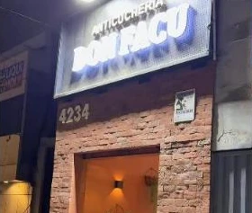
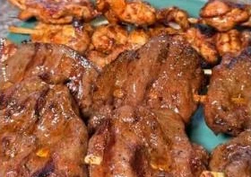
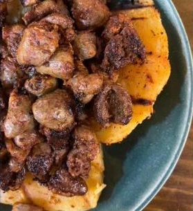
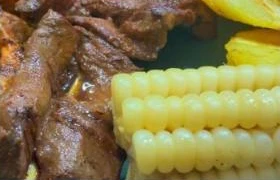

Trío anticuchero
3 palitos (1 de corazón de res, 1 de pollo, 1 de chancho) + 3 rodajas de papa a la parrilla + 1 porción de choclo + 2 cremas
S/ 48.00
Surquillo · A la parrilla
Corazón de res, chancho, pollo y mixtura, con papa a la parrilla, choclo y dos cremas de la casa. Arma tu pedido y llega directo a su WhatsApp.
Lunes a sábado 12:30 p. m. a 10:30 p. m.Av. República de Panamá 4234



3 palitos (1 de corazón de res, 1 de pollo, 1 de chancho) + 3 rodajas de papa a la parrilla + 1 porción de choclo + 2 cremas
S/ 48.00
2 palitos de corazón de res + 120 g de mixtura (choncholí, rachi, pancita) + 2 rodajas de papa a la parrilla + 1 porción de choclo + 2 cremas (rocoto parrillero y ají de la casa)
S/ 48.00
5 palitos (2 de corazón de res, 2 de pollo, 1 de chancho) + 5 rodajas de papa a la parrilla + 3 porciones de choclo + 2 cremas
S/ 78.00
Precios de su carta de mayo de 2026. Cada plato lleva papa a la parrilla, choclo y dos cremas: rocoto parrillero y ají de la casa.

Fotos de su Instagram @donfacuanticucheria, usadas como referencia en esta propuesta.
La familia
Anticuchos grandes, hechos a la parrilla y servidos con papa, choclo y sus cremas de la casa. Para ir en pareja, en familia o con amigos.
Pedir ahoraAv. República de Panamá 4234, Surquillo
San Pedro 363, Surquillo
El horario de este local se confirma con ellos por WhatsApp.